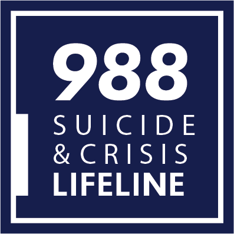
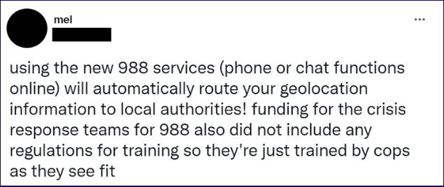
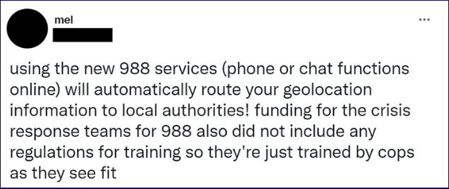

Fig. 5. Lamb, Nathan. “Use 988 to Reach the National Suicide Prevention Hotline.” Somerville-Cambridge Elder Services (SCES), 18 July 2022,
https://eldercare.org/use-988-to-reach-the-national-suicide-prevention-hotline/
https://eldercare.org/use-988-to-reach-the-national-suicide-prevention-hotline/
This information is wrong. It is very sad that some people make fake news about some new technology or facility
that is related to health. There will be still people out there believing the same and suffering from mental
health problems.The website dedicated to the hotline makes this clear, stating: “The Lifeline does not currently
have the capability to directly ‘trace’ callers, chat or text users in a way the same way that 911 providers do”(The Berkshire Eagle).
The screen shot of the message is attached below:


Fig. 6. Mehta, Ashni. “Claim: The New National Suicide Hotline, 988, Will Share Your Data and Geolocation with
Emergency Services in Your Area.” Desifacts.org, Desifacts.org, 6 Sept. 2022,
https://www.desifacts.org/health-and-wellness/988-geolocation
https://www.desifacts.org/health-and-wellness/988-geolocation